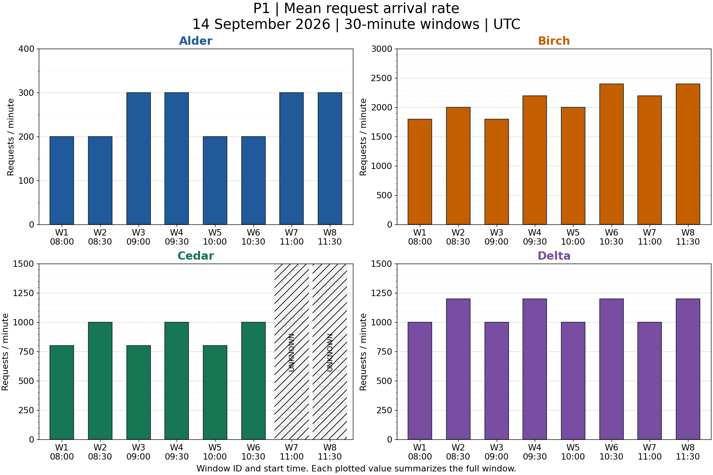
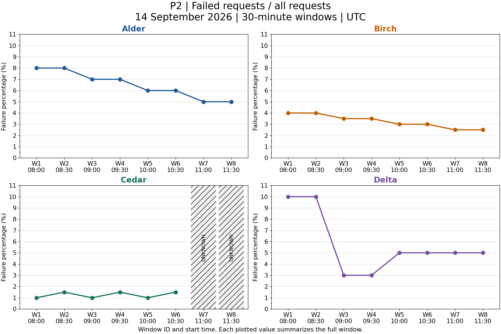
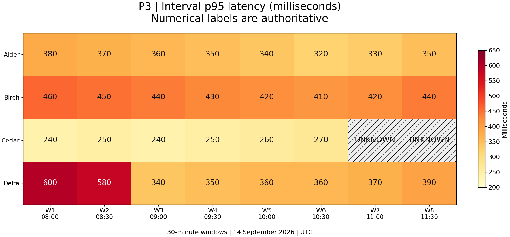
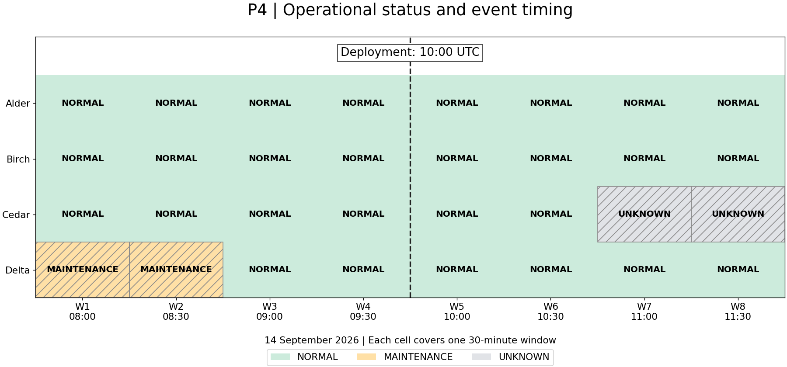

Regional API service: monitoring export
14 September 2026, 08:00--12:00 UTC. Images are the source evidence;
read the accompanying policy before making a capacity decision.

P1. Traffic. Separate vertical scales are explicitly labelled.

P2. Failure percentages. Missing telemetry is not a zero.

P3. Latency in milliseconds. Use the numerical labels.

P4. Status and event timing. Timing alone does not establish causation.